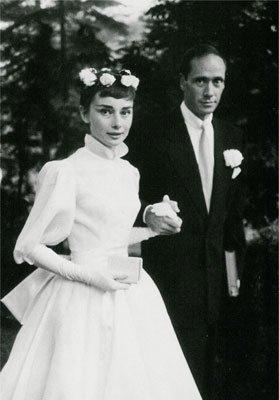

梅尔·费勒
费勒与奥黛丽·赫本是在1953年《罗马假日》伦敦首映式上经格利高里·派克介绍相识的。当时赫本24岁，费勒已是36岁的中年男子。由于赫本从小失去父爱，年长赫本12岁的费勒成熟稳重的气质令她立即陷入情网，毫不介意之前费勒已经有过三次失败的婚姻。1954年，梅尔·费勒和奥黛丽·赫本在纽约演出舞台剧《Ondine》时宣布订婚，不久，他们在瑞士布尔根施托克结婚，接着前往意大利罗马度蜜月。1960年，赫本生下了大儿子西恩。
婚后，费勒在生活和事业上扮演着赫本监护人的角色，两人合作出演了电视剧《魂断梅耶林》。1956年，费勒与奥黛丽·赫本合作出演了根据俄国文豪列夫·托尔斯泰原著改编的电影《战争与和平》，扮演情侣安德烈公爵和娜塔莎，影片取得成功。之后，他转向幕后，导演和制作电视剧与电影。1959年，由赫本主演、费勒导演的影片《翠谷香魂》上映，但影片并未取得预期的成功。赫本如日中天的名声与费勒不见起色的事业渐渐形成鲜明对比，费勒对于赫本事业的干涉日益加剧，她接什么戏，与什么人配戏费勒都会一一过问，他对她总是那么生硬，说一不二，令旁观者都难以接受。更令赫本难以忍受的是费勒的出轨。在赫本拍摄《窈窕淑女》期间，两人发生了不一般的争吵。他们之间的裂痕越来越深，终于在1968年9月1日分道扬镳，赫本为此体重急剧下降到42公斤，并剪去了一头长发。不过，1967年他们分手之前合作的最后一部影片《盲女惊魂记》由费勒担任制片，赫本主演，并轰动一时，成为赫本演艺生涯中最能反映其表演功力的作品之一。
